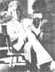

From Four Arguments for the Elimination of Television by Jerry Mander, copyright C 1977 by the author. Reprinted with the permission of William Morrow and Company, Inc. Available in paperback for $4.95 from any good bookstore of for $4-95 plus 95c shipping and handling from Mother's Bookshelf, P.O. Box 70, Hendersonville, North Carolina 28739.
What's the matter with our modern, technologically based society anyway? Why isn't it more satisfying? Why do so many of us now feel that some vague something hounds us and diminishes us and makes us into something less than we should be? Most specifically of all, do we really use television-and so many other "benefits" and "tools" of our technological age-or does it use us? Jerry Mander (see photo) speaks the unspeakable and asks the unaskable in a remarkable new book that is being completely serialized in this magazine. This is the eighth installment in the series.
(CONTINUED)
Along with the venality of its controllers, the technology of television predetermines the boundaries of its content. Some information can be conveyed completely, some partially, some not at all. The most effective telecommunications are the gross, simplified linear messages and programs which conveniently fit the purposes of the medium's commercial controllers. Television's highest potential is advertising. This cannot be changed. The bias is inherent in the technology.
In his novel Being There, Polish writer Jerzy Kosinski describes a man who is born and raised in a house that he never leaves. His only contacts with human beings are occasional encounters with a half-crazy maid, a crippled, senile old man confined in a room upstairs, and a television set. He watches television constantly.
In middle age the hero is suddenly thrown out of the house into the city. Attempting to deal with a world which he has seen only as reproduced on television, he tries to apply what he has learned from the set. He adopts television behavior. He tries to imitate the behavior of the people he has seen on the screen. He speaks like them, moves as they do, imitates their facial expressions. However, because these people were only images to him, and he has never experienced real people, save for the crazies in his house, he does not know anything beyond the images. He does not know about feelings, for example. He adopts the movements of the images but can't connect this with anything deeper inside himself. Because he has not exchanged feeling with a live human, his ability to feel has atrophied. He is a mechanical person, a humanoid. He is there physically, but like the television images, he is also not there.
I wonder if you would be willing to try another little experiment. Please go look into a mirror. As you gaze at yourself, try to get a sense of what is lost between the mirror image of you, and you.
You might ask someone to join you facing the mirror. If so, you will surely feel that other person's presence as you stand there. But in the reflection, this feeling will be lost. You will be left with only the image, possibly an expressive one, but only an image. What is missing from the reflection is life, or essence.
Finally, place an object in front of the mirror: a hair dryer, a chair, a vacuum cleaner, a comb. What is lost? I won't say nothing is lost in the reflection, a mirror image does slightly alter the dimension and the color of an object. But life has not dropped out, because the object did not have any life in it. Nothing emanates from it.
More information is lost in the reflection of a living thing than of an object. In the living creature, there is something which can be experienced only in person, no matter how vivid the attempt at visual reproduction. The inanimate object, on the other hand, has only its form. This can be reflected, if not perfectly, at least very well in the mirror image.
What applies to a mirror applies even more to a photograph or a film, and still more to a television reproduction.
Because television cannot convey the essence of life, it makes sense for television producers to concentrate on information in which life essence is not required for the message to be communicated. You don't need to "feel" the essence of a football player or a bomber pilot or a police attack squad to follow the action. And you surely don't need to feel the life in the product that is advertised, since the product has no life to begin with. And so football games, action dramas and product commercials, in which the image can carry the story, obtain a degree of communications efficiency that is not possible with humans, animals and plants.
Thirty years before McLuhan, a German critic, Walter Benjamin, wrote what is still the classic essay on the way the media affects what it attempts to convey: "The Work of Art in the Age of Mechanical Reproduction" (reprinted in Illuminations, a collection of his essays).
Benjamin's central argument is that all technical reproduction of art, nature, and the human image deletes what he calls "aura." (At the time he wrote, photographic reproduction, including film, was the main topic under discussion. But the argument applies to television as well.) Benjamin:
"One might subsume the eliminated element in the term 'aura' and go on to say: that which withers in the age of mechanical reproduction is the aura of the work of art."
Benjamin reminds us that before the age of mechanical reproduction, art projects did not exist in a context outside of their original use. If a religious object were carved in bronze, this piece of bronze gained its meaning from its context, that is, the place and time of its use. When it is dug up by archeologists two thousand years later, it may have intellectual meaning and be informative or beautiful, but it will not have retained the quality of its original power. This depended upon its connection to time and place. When it is then put behind glass in a museum, it has still less power. When it is photographed and reproduced ten thousand times on postcards, although it can then be found in ten thousand homes, it is so many times removed from its original shell that it conveys nothing. At this point, it could be used by anyone for any purpose, including advertisement. Meaning must be invested into it, as it no longer has any of its own.
Benjamin notes that what is true for art objects is even more true for natural, living beings. The art object, once it has been separated from its source in time and place, loses the powers invested in it ... while the human being loses humanness itself.
Benjamin describes the plight of the performer in a film, for example, who has the job of conveying him or herself through machinery which is predisposed not to allow such a conveyance.
"This situation might be characterized as follows: The feeling of strangeness that overcomes the actor before the camera ... is basically of the same kind as the estrangement felt before one's image in the mirror. But now [with photography and film) the reflected image has become separable, transportable.... The film responds to the shriveling of the aura with an artificial build-up of the 'personality' outside the studio. The cult of the movie star, fostered by the money of the film industry, preserves not the unique aura of the person but the 'spell of the personality,' the phony spell of a commodity.
Mechanical reproduction of images is the great equalizer. When you reproduce any image of anything that formerly had aura (or life), the effect is to dislocate the image from the aura, leaving only the image. At this point, the image is neutral, it has no greater inherent power than commodities.
Products have no life to begin with, neither did they have any aura that attached to some original artistic or religious use at a certain place or time. There is no original car or vacuum cleaner, at least not among those that are advertised. They are all duplications of each other, like the fiftieth copy of a photograph. So products lose virtually nothing when their images are reproduced mechanically or electronically, while original art objects lose their contextual meaning, and human beings and other living creatures lose virtually everything that qualifies as meaningful. Humans become image shells, containing nothing inside, no better or worse, more or less meaningful than the product images that interrupt them every few minutes.
By the simple process of removing images from immediate experience and passing them instead through a machine, human beings lose one of the attributes that differentiate us from objects. Products, meanwhile, suffer no such loss and effectively obtain a kind of equality with these aura-amputated living creatures shown on television. These factors conspire to make television an inherently more efficient and effective medium for advertising than for conveying any information in which life force exists: human feeling, human interaction, natural environment, or ways of thinking and being.
Advertisers, however, are not satisfied with equality. Leaving their products in their natural deadness would not instill any desire to buy. And so the advertising person goes a step further by constructing drama around the product, investing it with an apparent life. Since a product has no inherent drama, techniques are used to dramatize and enliven the product. Cuts, edits, zooms, cartoons and other effects (discussed further at the end of Argument Four) have the effect of adding an artificial life force to the product. These technical events make it possible for products to surpass in power the images of the creatures whose aura has been separated from them by the act of mechanical or electronic reproduction.
So television accomplishes something that in real life would be impossible: making products seem more "alive" than people.
Walter Benjamin draws important political and psychological conclusions from the disconnection of humans and art from their auras.
He argues that in destroying aura via the mechanical reproduction of art, all art as well as humans and nature lose their grounding, their meaning in time and place. At this point, like the product in the advertisement, the art image or the human image can be used for any purpose whatsoever. The disconnection from inherent meaning, which would be visible if image, object and context were still merged, leads to a similarly disconnected aesthetics in which all uses for images are equal. All meaning in art and also human acts becomes only what is invested into them. There is no inherent meaning in anything. Everything, even war, is capable of becoming art, and we are right back to Werner Erhard, Solaris and 1984.
To illustrate the problem, Benjamin quotes Filippo Marinetti, one of the founders of Italian Futurism:
"'For twenty-seven years we Futurists have rebelled against the branding of war as anti-esthetic.... Accordingly we state ... War is beautiful because it establishes man's dominion over the subjugated machinery by means of gas masks, terrifying megaphones, flame throwers, and small tanks. War is beautiful because it initiates the dreamt-of metalization of the human body. War is beautiful because it enriches a flowering meadow with the fiery orchids of machine guns. War is beautiful because it combines the gunfire, the cannonades, the cease-fire, the s cents, and the stench of putrefaction into a symphony. War is beautiful because it creates new architecture, like that of the big tanks, the geometrical formation flights, the smoke spirals from burning villages, and many others.... Poets and artists of Futurism . . . remember these principles of an aesthetics of war so that your struggle for a new literature and a new graphic art ... may be illumined by them. "
Benjamin says this loss of the inherent meaning which is connected to art, humans and nature furthers the notion that all experience is equal, leading in short steps to fascism: "[Fascism) expects war to supply the artistic gratification of a sense perception that has been changed by technology. This is evidently the consummation of'l'art pour l'art.'Mankind, which in Homer's time was an object for contemplation of the Olympian gods, now is one for itself. Its self-alienation has reached such a degree that it can experience its own destruction as an aesthetic pleasure of the first order."
Ronald Reagan once said, "If you've seen one redwood, you've seen them all." A movie actor and politician, Reagan had doubtless struggled with the question of the reproducibility of himself. Perhaps he, like other commodities, lost his essence in reproduction and so did not notice that all redwoods are not the same.
At the time of his remark, I was working with the Sierra Club on the campaign to keep some of the virgin redwoods, many of which had been growing since before the time of Christ, from being cut down by logging companies. Everyone thought the Reagan statement typical of the problem. A great many human beings could not understand that there is a difference between the original, oldgrowth trees and the replanted redwoods the companies would exhibit on their tree farms.
Not caring about the old trees, the lumber companies could put out pamphlets that discussed the trees in cosmetic terms. One horrible example was their argument that "all most people really want is for the trees along the highway to be saved, so they can stop their cars, and pose for snapshots next to a redwood."
The lumber companies may have been more right than wrong. Removed from direct contact with the old trees, their aura, their power, their life, their message about the potentialities of the planet, many people may have found Reagan's statement and the lumber company position plausible.
To offset this, we worked to convey a sense of what was being lost. We attempted to do this through the media. We carried around photos of the great old groves: moody, magical, somber, awesome, and attempted to place these pictures in newspapers, magazines and on television.
Some outlets carried them and some did not, but it was clear that it didn't really matter whether they were reproduced in the media. They didn't "work." Too much was lost in the translation. More than anything, they lost their "aura," the mood that surrounds them and the quality of their existence that can be captured only in their presence.
Then we started doing the opposite. We carried around photos of acres of stumps where hundreds of redwoods had been cut down. I don't know if you have ever seen a field of tree stumps, but it is a horrific sight, not unlike a battlefield. Fortunately, however, it has very high visual definition, conveys a broadband emotion-horror-and does not have the problem of conveying aura, since everything is dead.
When we carried these latter photos around, the media grabbed them. They even dispatched their own crews to redwood country to expand on what we'd brought.
That is the moment I learned that death is a much better subject for television than life. And so when television decided to concentrate upon images of dead bodies in Vietnam, it came as no surprise to me.
In the cases of both redwoods and Vietnam, Images of death finally aroused the public. Images of life-whether the trees themselves, or the finely tuned Vietnamese culture and sensibility- accomplished nothing. They were far too complex, too subtle. They involved too many senses. Most of all, they required a conveyance of aura. Since none of this was possible on television, they only put people to sleep.
In separating images from their source, thereby deleting their aura, television, photography and film also remove the images from their context of time and place.
The images which arrive in your home may have been shot yesterday or a week ago, on location or in a studio. By the time you see them, they are not connected to those places or those times. They have been separated from all connection. All the images arrive in sequence with equal validity. They exist only in the here and now. They are floating equally in space.
This situation inevitably provides another advantage for advertising relative to virtually any other kind of television information.
Human beings and living creatures exist in process. From one year to the next they are different. What's more, human culture, government, religion and art are also in process. Explaining a human being or a culture or a political system requires some historical understanding. Products do not grow organically, they are fashioned whole and complete in the here and now. You see them in one stage of their life cycle. That is their only stage until they start falling apart in your home. This is not to say that products have no history. A new Cadillac with a V-8 engine represents a historical change from a Model T. But you don't need to know the history to understand the Cadillac. And the Cadillac itself, the one you buy, does not grow or change.
Products can be understood completely and totally in the here and now. They are pure information, free of time and free of place. When product images are placed on television in sequence with real events of the world, whose contexts of time and place are deleted by television, products obtain an equality they'd otherwise lack. This gives products a great deal more significance in the viewer's mind than any direct experience of them would.
That advertising achieves a validity effectively equal to that of real events of the world is only one bizarre result of the separation of images from time and place. Another is that it becomes impossible for a viewer to be certain that the information which is presented on television ever actually happened.
Do you remember the Howard Johnson's shoot-out in New Orleans a few years ago? I watched it all on television.
The regular programming was interrupted to take me to New Orleans where a wildly murderous band of black revolutionaries had taken over the upper floors of a Howard Johnson's hotel. They were systematically murdering the white guests. This was a truly frightening story. Images of race war ran through my mind.
The announcer said that a massive police assault was underway, and I saw helicopters, police with drawn guns, and a lot of tense faces.
I didn't see any murderous black revolutionaries, although I certainly imagined them, and they were described for me by the police on the scene. The death toll was uncertain.
A few hours later, the news reported that the siege was continuing but that the police had reduced their estimate of murderous black revolutionaries to two or three and that the death of only one white guest had been thus far confirmed. However, a number of policemen had been killed by the murderers. The death toll was still uncertain but it could be as high as a dozen.
By morning, the siege was over, and the police could find only one revolutionary, who apparently had been dead for quite a while, long before the assault was halted. There was still only one dead white guest but there were eight dead police, killed by the band, Police were baffled as to how the rest of the murderous group had eluded them.
With information confined to the media, separated from the context of time and place, the creation of reality is as simple as feed-in -or it directly into our heads.
A week later, after an investigation, the New Orleans police department reported that they had found that only one white guest had been killed, only one black man had been involved in the killing, that this one man was not a black revolutionary but a crazy person. He had been dead for several hours while the invasion of the hotel continued, and all of the dead police had been killed by each other's ricocheting bullets. The story was carried in the back pages of the newspapers; I wasn't able to find it in any television news reports.
It turned out that virtually all of the facts as reported on television were totally wrong. Ignoring for the moment that television did not correct its own report, newspapers did, I was given the opportunity to straighten it all out in my mind. There were no murderous revolutionaries; there was only a crazy man. The police had all shot each other. But even now, several years later, I can recall the images of the police assault. Brave men acting in my behalf. The images of the murderous band. I can recall them now even though the information was completely false.
In April of 1976 the Chicago Daily News reported that Central Intelligence Agency operatives located in parts of the world where there are no journalists-central Africa, South American jungles, and so on- had been feeding totally fictitious stories to two hundred newspapers, thirty news services, twenty radio and television outlets and twenty-five publishers, all foreign owned. These stories, sometimes concerning fictitious guerrilla movements, would be reported as real in these countries and then would be picked up by the American media. Eventually you read these stories in your newspaper or saw them reported on the evening news. The purpose of the false stories was to manipulate information so that foreign governments and our government would think some event was happening when it wasn't or vice versa. Policy decisions would be made based on this information. Public understanding would be distorted. The course of world politics would be altered.
Can you recall the Mayaguez incident of 1975? Walter Cronkite announced that Ford had authorized Kissinger to undertake a rescue off the coast of Cambodia because the crew of the Mayaguez had been assaulted and seized. Kissinger sent the air force to bomb some island where the crew was presumably detained (but actually wasn't). Did you stop to realize at any point in following this story or in developing your opinion about it that every person and detail in it were media images describing media actions concerning other media images based on earlier media information?
Tragically, this is the case with virtually all news that is carried in the media.
Unlike print media, television information is limited by time ... so what is presented is always condensed.... The result of this condensation is distortion.
It exists outside of your life. Often it exists outside the lives of the people who report it and the government officials who act upon it.
However, for most people sitting at home viewing the news, there is no way at all to know what is true or correct and what is not. If the news has a certain logic to it, we believe it is right. We can determine the logic of one day's events if it seems to follow from the logic of the previous day's events, which were also carried in the media.
Under such circumstances, it becomes possible for news to exist only within the media and nowhere in the real world. That was the situation that Orwell posited in 1984. Did Goldstein exist? Was there a war between Oceania and East-asia? How could anyone possibly know, since it all concerned events in distant places, and it all arrived on television.
With information confined to the media, totally separated from the context of time and place, the creation of reality is as simple as feeding it directly into our heads. An earlier lie can become what Werner Erhard calls the "ground of reality" for the newer lie. We don't need the CIA to prove the point. Any evening's news is filled with information that we can't possibly know is true. How could we know? The only way to know for sure if something happened is to be present at the time and in the place of the event. If not, then you are taking the information on faith.
This problem of uncertainty, caused by disconnection from time and place, applies to all media. For example, some chapters ago, I described a correspondence I'd had with an anthropologist friend, Neal Daniels, concerning the importance of light in many cosmologies. I also described a trip to Micronesia and a conversation with a man I met there. I also told you about a woman at an environmental conference, using her words to support my arguments. How can you know if any of these things happened? How could you possibly know? Well, you could go to the American Anthropology Association, track down Neal Daniels, and ask him. If he exists. You could write the University of Michigan and ask for a roster of attendees at that environmental conference, seeking a woman who fit my description. You could do that only if the conference itself happened. But would you? What a lot of trouble that would be. And yet, perhaps I made up those stories to fill out some points. Perhaps I made up one of them. How can you know?
Whenever you engage with the media, any media, you begin to take things on faith. With books you are at least able to stop and think about what you read, as you read. This gives you some chance to analyze. With television the images just come. They flow into you at their own speed, and you are hard pressed to know a true image from one which is manufactured. All of the images are equally disconnected from context, afloat in time and space.
With events separated from the time and place in which they occur, it becomes possible to condense them in time. It is not only possible but inevitable that this be done. Unlike print media, or even film, television information is inherently limited by time. It is impossible to present all of most events, so what is presented is always condensed. Most of the event is squeezed out. The result of this condensation is distortion.
If you have ever participated in a public event of any sort and then watched the news report of it, you are already aware that the news report barely resembles what you experienced. You are aware of this because you were there. Other viewers are not aware. When television describes events that happened at some other historical time, no one can know what is true.
The best article I ever read on the inevitable distortions resulting from television's inherent need to condense time was written in TV Guide by Bill Davidson (March 20, 1976). Writing about the new spurt of "docudramas," which rep
resent themselves as true versions of historical events, he said, "Truth may be the first victim when television 'docudramas' rewrite history."
Davidson analyzes some half-dozen docudramas for inaccuracy and distortion and then asks, "Does this mean that docudrama is more drama than docu? Probably yes. Is the Amtrican public deliberately being misled by representations that these films are in fact true stories? Probably yes."
In fact, however, the distortions are less deliberate than they are inevitable.
Davidson interviewed David Rintels, who wrote the docudrama Fear on Trial, which purported to be a true account of the blacklisting of John Henry Faulk in 1956. He quotes Rintels as saying:
" 'I had to tell a story condensing six or seven years into a little less than two hours, which means I could just barely hit the major highlights. I did what I think all writers should do-present the essence of the facts and capture the truth of the general story.... Attorney Louis Nizer's summation to the jury took more than 12 hours. I had to do it in just three minutes.' "
The need to condense is inherent in a medium which is limited by time. The process of condensation, however, has the effect of eliminating the sort of nuisance which is as important to historical accuracy as the action that is included.
Davidson points out that since television docudramas have condensed such complex subjects as the career of Joseph McCarthy, the Attica prison riots, and the life of Martin Luther King, Jr., the problem is virtually- beyond control. Davidson quotes psychologist Dr. Victor B. Cline of the University of Utah, who says: " 'The very real danger of these docudrama films is that people take it for granted that they're true and-unlike similar fictionalized history in movies and the theater- they are seen on a medium which also presents straight news .... I think they should carry a disclaimer to the effect that the story is not totally true but based on some of the elements of what actually occurred.' "
I think so too. But if there should be disclaimers for docudramas there should be many more for news. As prominent San Francisco journalist Susan Halas once put it: ''There is no news, there's only media." Where docudramas reduce an event to an hour or two, distorting truth, the news may reduce the same event to thirty seconds, eliminating most of the information that a reasonable, thinking person would consider necessary to any understanding of events in process. What is left is the skeleton of events, making only scraps of knowledge available for people's perception and understanding.
The inevitable need to condense information in time is the cause of this. The way the information is condensed-what is left in and what is deleted-will be described further at the end of Argument Four, where we discuss highlighted moments and their application to news.
EDITOR'S NOTE: The third part of Jerry Mander's fourth argument for the elimination of television will be published in MOTHER NO. 61.
|
 |
|
|